前言
使用 Mac 开发也有几个年头了，积累了一些效率工具和开发工具，今天整理了一下并分享给大家，工具几乎都是开源免费的，也期待大家有更多好的工具推荐给我，我补充上去。
包管理器
Homebrew
Homebrew 是一款 Mac OS 平台下的软件包管理工具，拥有安装、卸载、更新、查看、搜索等很多实用的功能。算是 Mac 系统的必备环境了。
有了它，比如你要下载下面提到的 node 环境，你根本不用考虑 node 去哪个地方下，只需要执行brew install node命令就好。
如果大家不习惯使用命令操作，还可以使用这款可视化的工具cakebrew。
Npm
Npm 其实是 Node.js 的包管理工具，安装 Node 后就会有 npm 环境了。有很多 npm 包是很好的工具，以我经常用的一个举例吧
anywhere
它可以随时随地将你的当前目录变成一个静态文件服务器的根目录，只需要你在当前目前下执行一个anywhere命令。
这样就实现了一个局域网下，文件互传的功能，我经常使用它来和同事之间传递文件，毕竟内网传递速度就是快。
Gem
Gem 是 Ruby 模块的包管理器。如果你是 iOS 开发者，对这个一定不会陌生，因为 CocoaPods 本身就是一个 ruby 模块，我们可以通过 gem 来安装 CocoaPods，当然还可以通过 Homebrew 来安装。
日常工具
Snipaste
最好用的截图工具，我要向大家强烈安利它，不仅有正常的截图、编辑等功能，还有一个其他软件都没有而且我经常用的功能 — 贴图，可以直接将图片像便签一样贴在桌面上。
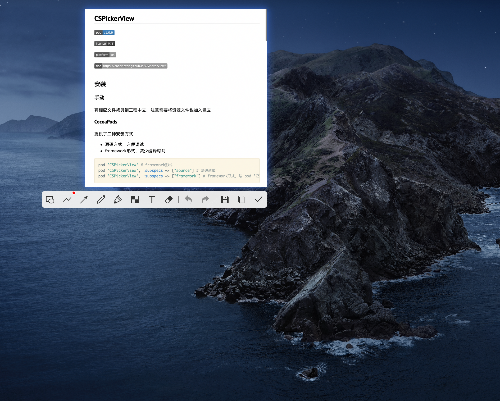
MWeb
专业的 Markdown 写作、记笔记、静态博客生成软件，用起来真的比较方便，其实还会有朋友推荐 Typora 这款软件，但是我不太喜欢那种预览区和编辑区在一起的方式，如果对 Typora 有兴趣的，也可以去看看。
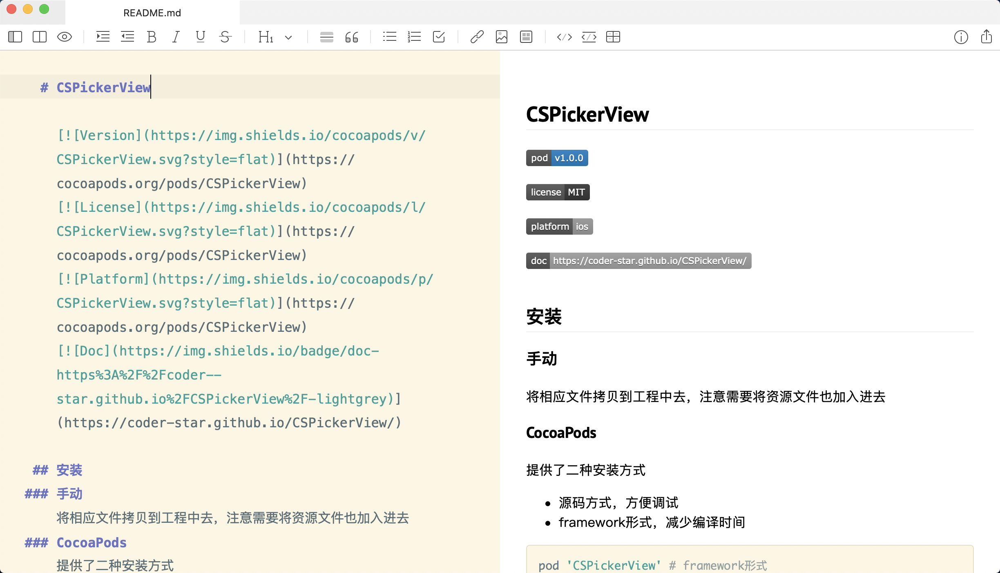
PicGo
写博客的时候少不了需要放上一些图片，PicGo 是一个很好的图床工具软件，可配置多种图床存储位置，github、云服务器等，还支持插件。
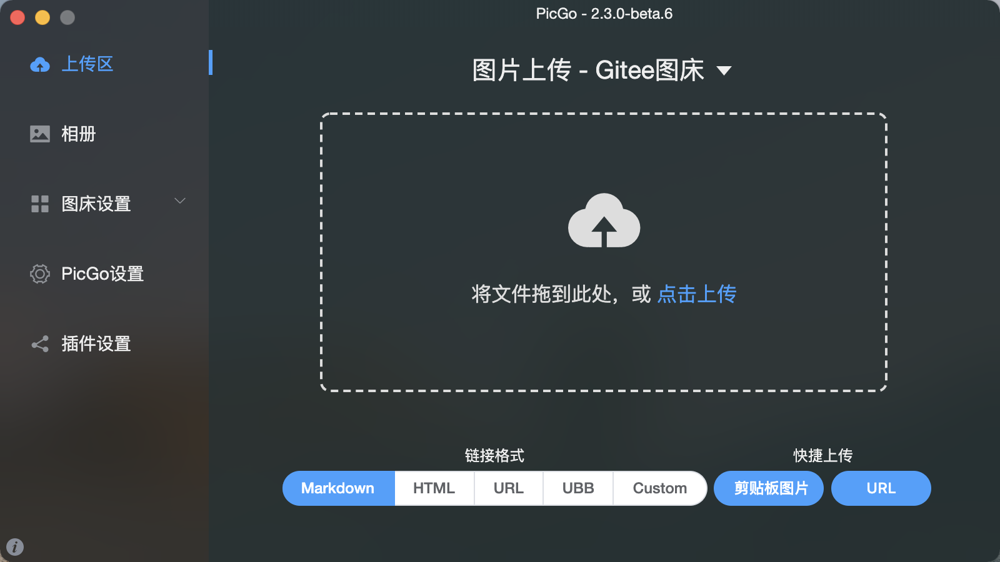
Go2Shell
Go2Shell 可以让 Finder 中打开一个指向当前目录的终端窗口。
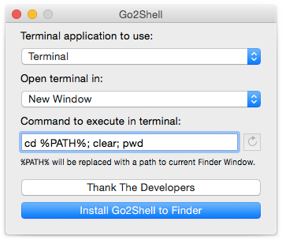
Parallel Desktop
Mac 上的虚拟机软件，有的软件没有 Windows 版本，或多或少需要一个虚拟机安装其他系统。
我有的时候会通过这种方式从 Mac 电脑向 Mac 不支持写的硬盘中拷贝文件。
Mircrosoft Remote Desktop
微软官方免费远程桌面控制 Windows 的软件，我之所以用这款软件，是因为我上家公司服务器系统是 Windows Server 的，如果也有类似需求或者需要远程 Windows 系统的读者，可以看看这款软件。
Remote Desktop - VNC
远程连接 Mac 的工具。我只所以用这款软件，是因为我前不久需要连接 Mac Mini 做一些 iOS 自动化打包的事情，有类似需求的读者，可以看看这款软件。
Stretchly
这是一款休息时间提醒应用，非常适合我们程序员这类写 Bug 时聚精会神，忘记起来活动活动的职业。
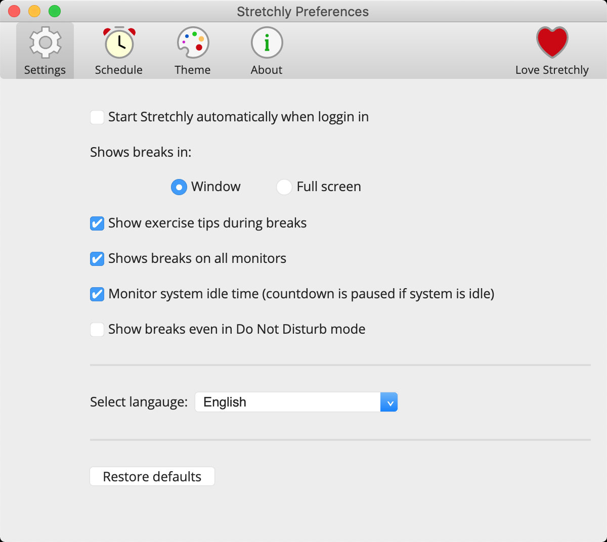
Alfred
这个我觉得根本无需介绍，神器，使用 macOS 的同学应该都知道。一句话来说就是，Alfred 是 macOS 上神级的效率应用，能够在实际操作中大幅提升工作效率。
uTools
生产力工具集
SwitchHosts
是一个管理、切换多个 hosts 方案的可视化工具。
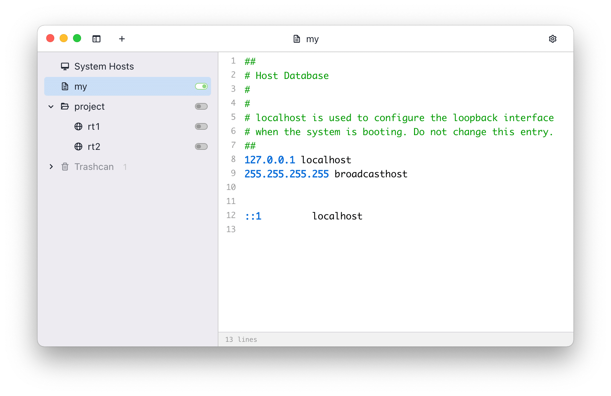
ezip
Mac 文件解压缩工具。
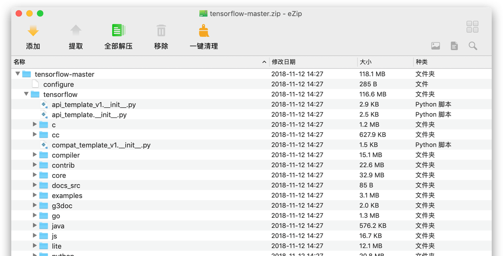
Dozer
一款免费的 Mac 菜单栏图标隐藏软件，开启软件后，在 Mac 菜单栏会出现两个小圆点，将两个小圆点拖拽至你需要隐藏的应用图标的右边，点击第二个小圆点，便能完成隐藏。
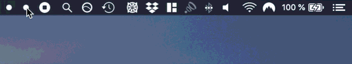
fliqlo
翻页时钟屏保软件
开发工具
Sourcetree
Sourcetree 是我用过最好用的版本管理（Git）客户端软件。

Charles
非常优秀的抓包工具
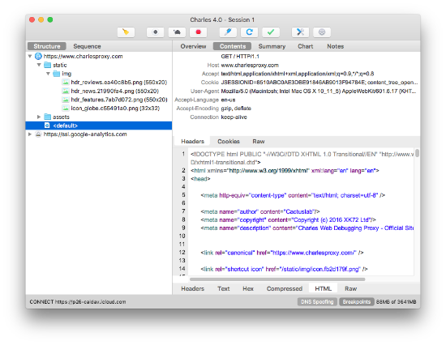
iTerm2
iTerm2 + Oh My Zsh可以实现命令自动补全、自定义主题等等功能，强烈推荐，相关安装教程有很多，可以自己去找找。
只上一张效果图，大家感受一下吧
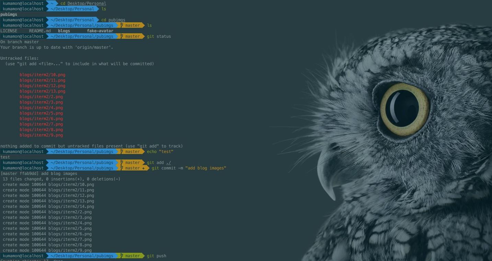
Postman
接口测试工具，如果不想安装软件，也可以安装谷歌浏览器扩展。
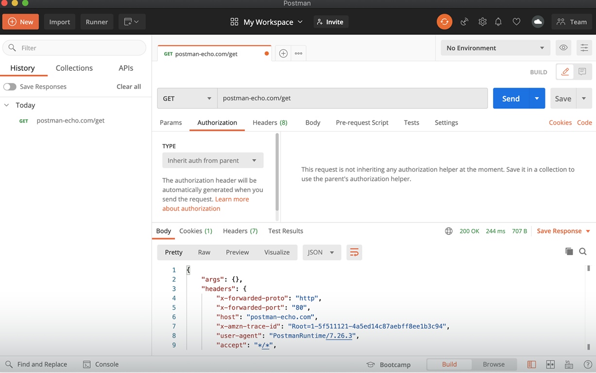
FinalShell
FinalShell 是一体化的的服务器，网络管理软件，不仅是 ssh 客户端，还是功能强大的开发，运维工具，充分满足开发，运维需求。
国人开发的 SSH 客户端工具，亲验好用。
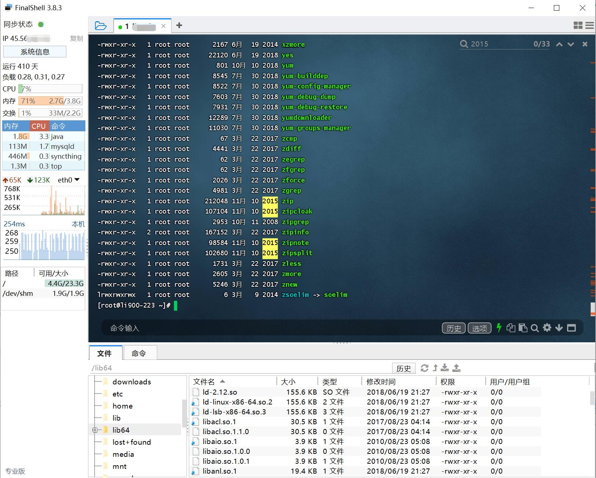
在线工具
JSON
JSON 解析，用来格式化 JSON
tinypng
在线压缩图片
TinyPNG4Mac：TinyPng的客户端工具，无需联网使用浏览器；
tableconvert
将表格转成 md，excel 等各种形式，我经常会用来写一些表格用来转成 md
DownGit
下载 Github 仓库中某一个指定文件或者文件夹
swiftify
快速将 Objective-C 代码转换为 Swift